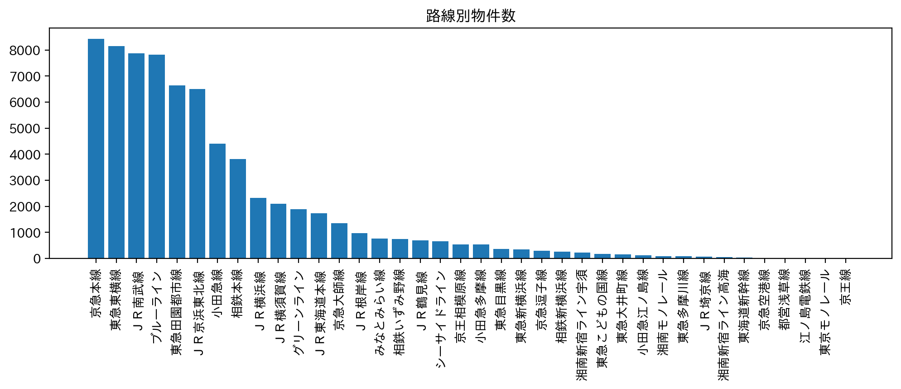
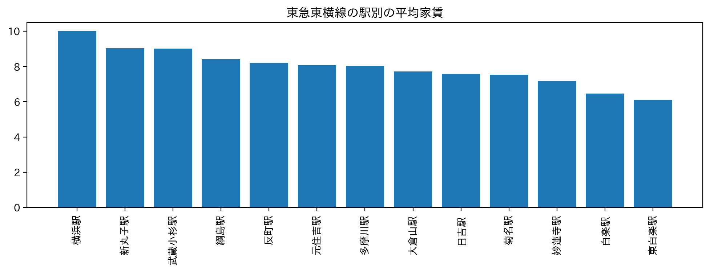
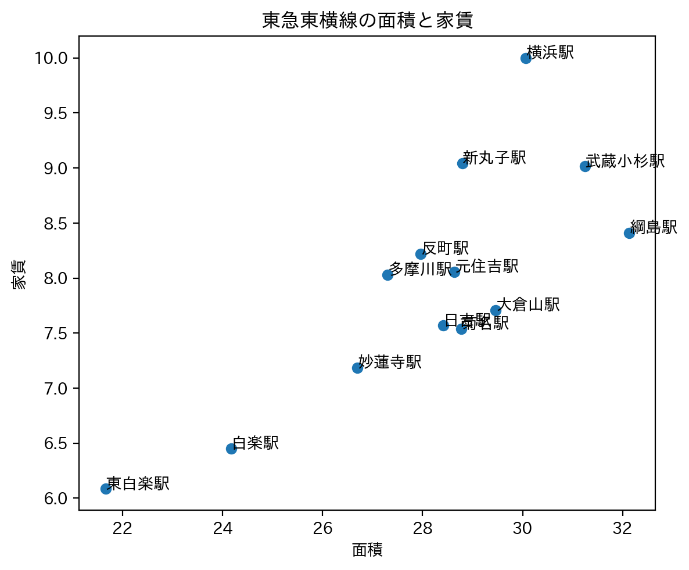

新入生におすすめの物件
新入生に勧める物件の駅として、２つの駅を推奨する。
＊新入生とは、神奈川大学みなとみらいキャンパスに通う大学生を指す。
推奨1: 武蔵小杉駅
武蔵小杉駅は、川崎市にある駅で近年開発が進んでいる。
2023年10月25日に公開された『「神奈川の賃貸物件で注目されている街（駅）」ランキングTOP30！』 外部サイト では、第2位にランクインしている。
推奨2: 日吉駅
日吉駅は、横浜市港北区にある駅。
2021年11月15日に公開された『「横浜の人気な駅」ランキングTOP10！』 外部サイト では、第1位にランクインしている。
なぜこの2つの駅を推奨するかの理由を、以下で述べていく。
理由1: 東急東横線沿いであること
理由の1つ目は、東急東横線（以下、東横線）沿いの駅であることだ。東横線は運賃が安い路線である。
また、東横線はみなとみらい線直通の路線でもあるため、みなとみらい方面へのアクセスのしやすさがある。
アクセスのしやすさはみなとみらい方面だけでなく、横浜や東京(渋谷、代官山、中目黒)にも乗り換えなしの1本で行けることもメリットであると思う。
理由2: 大きな駅であること
武蔵小杉駅、日吉駅はともに大きな駅であり、快速や特急電車が止まるという点がメリットだ。主要な駅に速く行けることであまった時間を他のことに使える。
また、両者とも駅の近くにショッピングモールがあるため、その駅で買い物を済ますことができる。他の駅に行かなくてもその駅で完結するのだ。
（具体例は以下の通り）
- 武蔵小杉駅
武蔵小杉東急スクエア、グランツリー武蔵小杉
- 日吉駅
SOCOLA日吉、日吉東急アベニュー
理由3: 路線が多いこと
理由の3つ目は、通っている路線が多いことだ。
（具体例は以下の通り）
- 武蔵小杉駅
JR横須賀線、JR埼京線、JR湘南新宿ライン、JR南武線、相鉄直通線、東急東横線、東急目黒線
- 日吉駅
地下鉄グリーンライン、東急東横線、東急新横浜線、東急目黒線
参考にした情報
駅を推奨するにあたって参考にした情報は4つある。

路線別物件数は、東横線が約8000件で2位にランクインしている。
 日吉が1位、武蔵小杉駅が2位でどちらも1000件を超えている。
日吉が1位、武蔵小杉駅が2位でどちらも1000件を超えている。

武蔵小杉駅は約9万円でやや高いが、日吉駅は約8万円弱だ。1番安い東白楽駅でも約6万円強なので、差額は1万円ほどだ。

武蔵小杉駅は31㎡あたり9万円なので、0.2903万円/㎡。日吉駅は28㎡あたり7.5万円なので、0.2678万円/㎡。